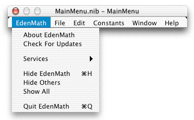

Menu Bar
Most of the menu bar is automatically created for you, and for this project, you can remove the excess items which don't pertain to this project. Other items will need to be renamed appropriately to reflect the name of the application. In the menus where it says NewApplication, rename it to the name of your project (in this case, EdenMath). Just click on MainMenu interface, and then double-click on the items you want to rename. If you want to delete an item (Print, for example), single click on it, and then hit the DELETE key on your keyboard. In the end, this is what the menus were left with:

- EdenMath - About EdenMath, Check For Updates, Services, Hide EdenMath, Hide Others, Show All, Quit EdenMath
- File - Close
- Edit - Undo, Redo, Cut, Copy, Paste, Clear, Select All
- Constants - A list of common mathematical constants, such as e and Π
- Window - Minimize, Bring All to Front
- Help - EdenMath Help, EdenMath Product Page, Send Feedback
All of the Edit functions are automatically connected to functions provided by OS X. Nice, huh? The About EdenMath and EdenMath Help sections have their own sections to expand further on these topics.